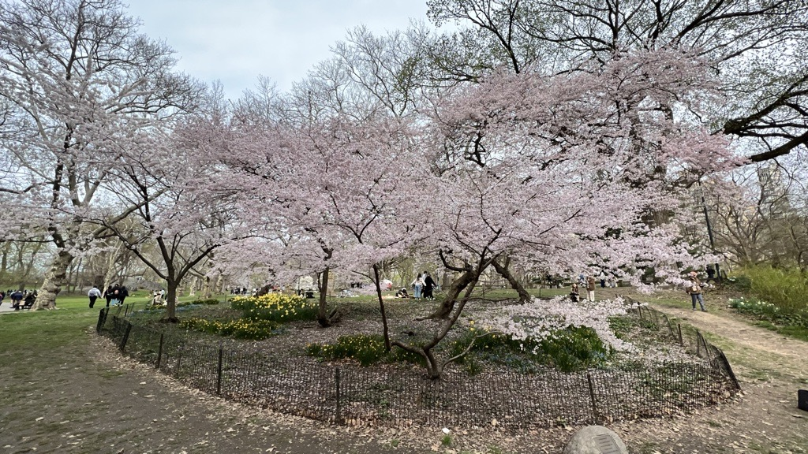

About Us
Welcome to iHEALTH Lab! We are a young, dynamic research team exploring integrative healthcare across acupuncture, herbal medicine, Tai Chi, and more. Led by Dr. Mingxiao Yang, MD (CMD), PhD, our mission is to bring evidence-based integrative therapies to all.
Join us: Undergraduate/graduate students, postdocs, and collaborators—reach out at mingxiao.yang@ntu.edu.sg.
Lab Focus
- Integrative Therapies: Acupuncture, herbal medicine, Tai Chi & exercise for cancer side-effects, metabolic syndrome & cardiovascular diseases.
- Mechanistic Research: Neurobiology, omics, neuroimaging & quantitative sensory testing to study cognition & memory.
- Healthcare Innovation: AI, digital platforms & implementation science to improve therapy access.
News
April 2025: Osher Pilot Grant awarded for Tai Chi trial in CIPN.
March 2025: Massage therapy systematic review accepted in Integr Cancer Ther.
February 2025: PhD recruitment open—email us to apply!
Projects
Ongoing Projects:
- Tai Chi for Chemotherapy-Induced Peripheral Neuropathy: waitlist-controlled trial (Osher Pilot).
- Massage Therapy for Cancer Symptom Care: systematic review & evidence map.
- NIH R21: acupuncture vs CBT on dopamine metabolism in insomnia.
Publications
See our full peer-reviewed list:
Contact
Dr. Mingxiao Yang, MD (CMD), PhD
Assistant Professor, School of Biological Sciences & NTU Chinese Medicine Clinic
Nanyang Technological University, Singapore
Email: mingxiao.yang@ntu.edu.sg
Address: 60 Nanyang Drive, Singapore 637551